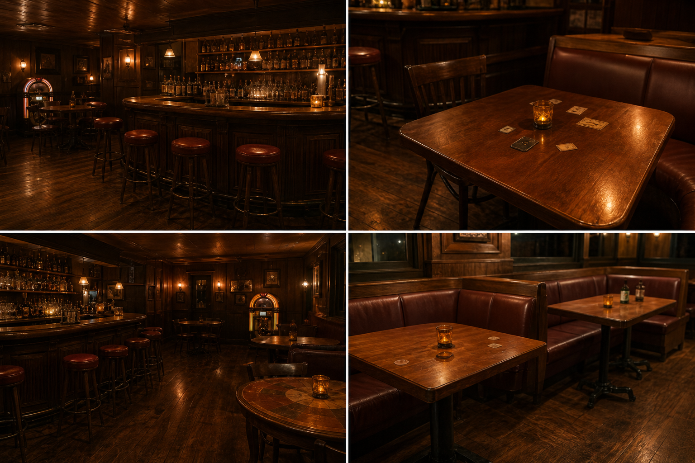
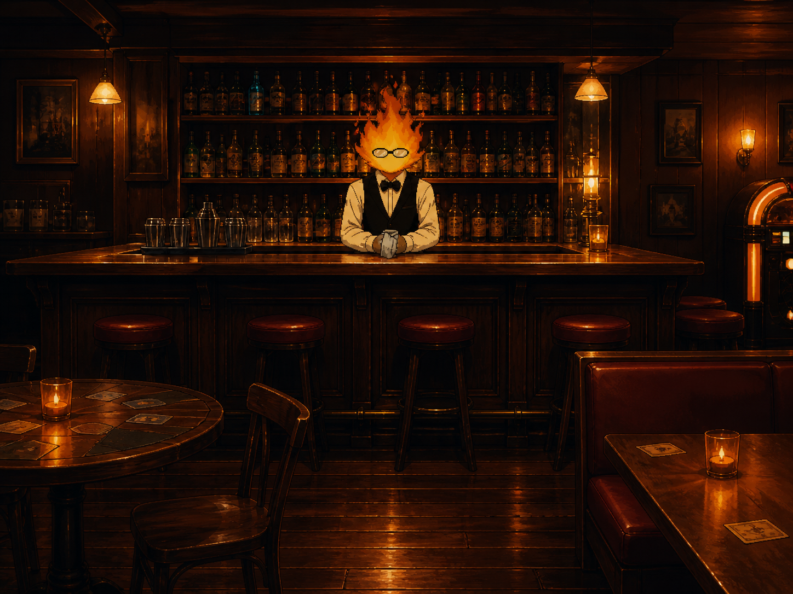

Bem-vindo à Grillby's
Inspirada no universo de Undertale, a Grillby's é mais do que uma simples cafeteria. Aqui, cada detalhe foi pensado para trazer a atmosfera acolhedora e misteriosa do famoso bar do subsolo.
Com iluminação quente, decoração rústica e um ambiente confortável, a Grillby's é o lugar perfeito para relaxar, conversar e aproveitar bebidas especiais feitas com cuidado.

Uma experiência única
Ao entrar na Grillby's, você é recebido por um ambiente inspirado no fogo e na tranquilidade. A música ambiente, o design escuro com tons quentes e os detalhes em madeira criam uma sensação de conforto e nostalgia.
Seja para estudar, conversar com amigos ou apenas aproveitar um bom café, a Grillby's oferece um espaço onde você pode se sentir em casa.

Destaques da casa
Cafés Especiais
Bebidas quentes com sabores únicos inspirados no universo do jogo.
Ambiente Temático
Um espaço inspirado no icônico Grillby, com uma vibe aconchegante e imersiva.
Doces Artesanais
Delícias feitas com carinho para acompanhar seu café.